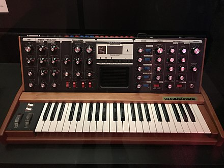

Yancey's death has had a significant impact on the hip-hop community.
Besides countless tribute tracks and concerts, Yancey's death created a wealth of interest in his remaining catalog and, consequently, Yancey's influence on hip-hop production became more apparent.
"Highly influential for both producers and drummers", he made "innovative" use of the MPC sampler,
by employing real-time rhythms and choosing not to quantize them, thus creating a "drunk" and "laid-back" style which "[was] a significant contribution to contemporary popular music that evade[d] quick interpretation, transcription and definition".
Questlove – who considers Yancey the "world's greatest drummer"–said that he "invented the sound we call neo-soul" and actively sought to emulate Yancey.
he University of Illinois' Adam Kruse states that Yancey is "considered one of the greatest beat producers in hip-hop's history".
Dave Chappelle gives a special dedication to Yancey in his movie Dave Chappelle's Block Party,
which includes the statement: "This film is dedicated to the life and memory of Music Producer J Dilla, aka Jay Dee (James D. Yancey)".
The film focuses mostly on members of the Soulquarians, a collective of hip-hop musicians of which Yancey was also a member.
Honors

Yancey's music has been used in various television programs. In 2006, Cartoon Network's late night programing block Adult Swim played the songs "Waves",
"Welcome to the Show", and "Mash" during the commercial bumpers in between shows, as well as a number of tracks on their Chrome Children EP. In May 2010,
UK mobile network O2 used Jaylib's "The Red" instrumental in their "Pool Party" ad.[45] A recent BBC documentary inspired by the Olympic runner Usain Bolt contained two Yancey-produced songs—"So Far To Go" by Common and "Runnin'" by the Pharcyde.
In February 2007, a year after his death, Yancey posthumously received the PLUG Awards Artist of the Year as well as the award for Record Producer of the Year.
In Yancey's hometown of Detroit, Detroit Techno veteran Carl Craig has fronted a movement to install a plaque in honor of Yancey in Conant Gardens (where the artist grew up and initiated his career).
A resolution for the proposed plaque was passed by the Detroit Entertainment Commission in May 2010, and is currently awaiting approval by the Detroit City Council.